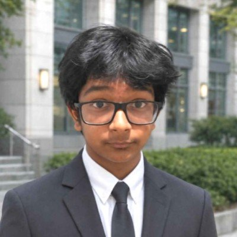
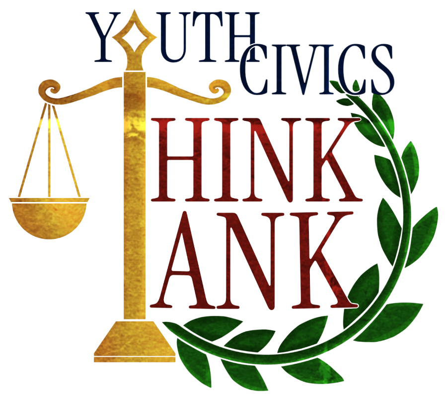
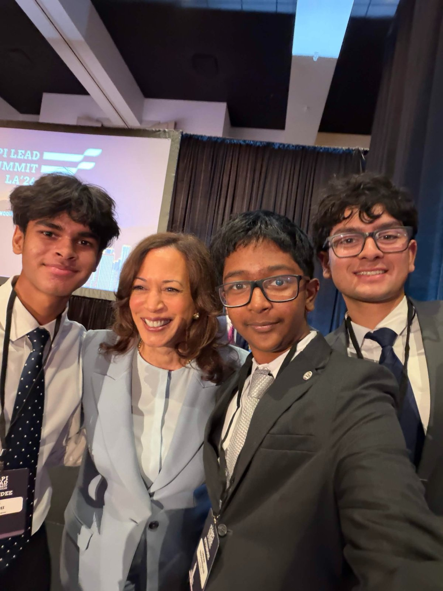
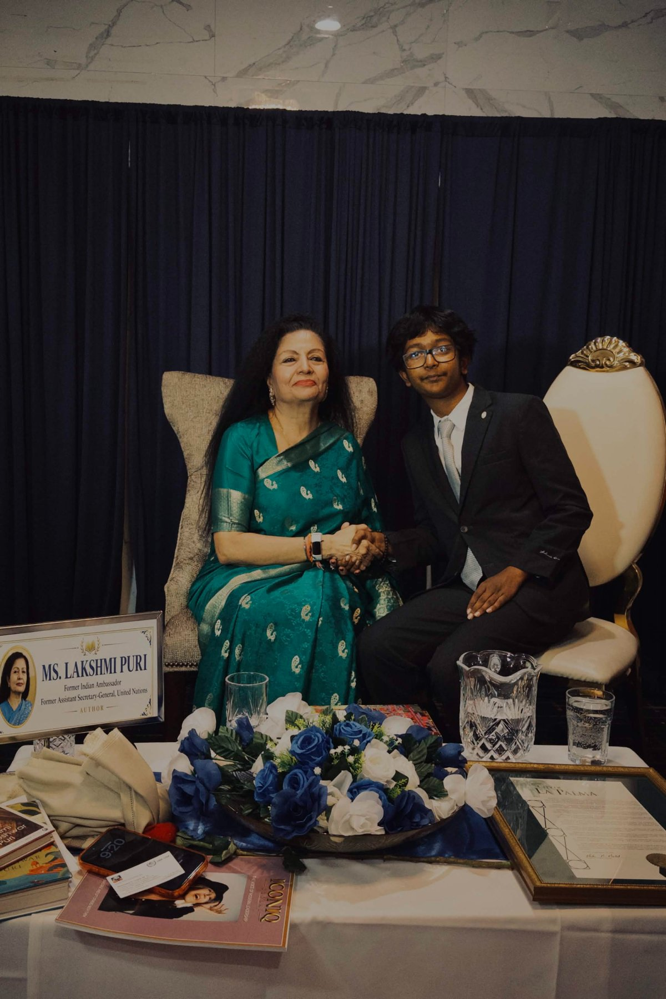

I'm a high school junior in Lakewood, CA. I co-founded the Youth Civics Think Tank, coordinate the City of Artesia's youth internship, and intern at a personal injury law firm. I care about public service, civic engagement, and opening doors for underserved communities.
Psst: the stickers move. Drag them around.

I co-founded YCTT to connect youth civic engagement to real policy outcomes through policy research. We publicly launched at the SCAG Annual Summit in front of regional government stakeholders, and we've been building ever since.
Visit youthcivicsthinktank.orgLaunched SAP with CurioCrate™, mobilizing student advocates to expand access to hands-on STEM curricula for elementary schools nationwide.
Led a student delegation to meet mayors, council members, and regional planners representing all 191 Southern California cities, and used the summit to launch YCTT.
Working with mayors across SoCal and with the offices of Senator Adam Schiff and former Vice President Kamala Harris, both of which now actively support YCTT's network-building.
Moments from the rooms where the work happens. Hover or tap a photo to develop it in full color.


In a law office, a courtroom competition, and at the podium.
| Role | Where | When | Highlight |
|---|---|---|---|
| Coordinator | Thoughts to Actions Youth Internship, City of Artesia | Jun 2025 – Present | Promoted from the program's youngest-ever intern to sole coordinator; doubled enrollment. |
| Youth Campaign Volunteer | Ali Taj for CA-67 State Assembly | Dec 2025 – Present | Grassroots outreach and voter engagement across 10–12 districts. |
| Assistant Secretary General | Model United Nations, Whitney HS | Sep 2024 – Present | Runs operations for 50+ members; recruited 20+ new members with a training curriculum I designed. |
| Co-Coordinator | RoboCamp, Cerritos | Summers 2024–26 | Led 45 mentors, recruited ~60 students, and awarded ~$2,000 in scholarships. |
| Business Operations Intern | Happy Tails GO! (startup) | Dec 2025 – Present | Market analysis of 15+ LA pet service providers; 3 positioning gaps adopted into strategy. |
| Marketing Intern | The Legal Marketer | Dec 2025 – Present | Rebuilt the firm website and designed a 3D-printed client acquisition system for 2 locations. |
No registration required. The polls never close.
Planning an event, a campaign, or a youth program? I'd love to hear about it. I speak English, Tamil, and Telugu fluently, plus conversational Spanish.